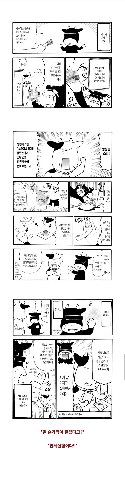
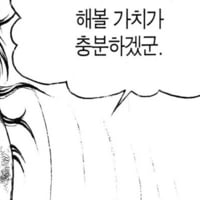

강연금 작가님 아버지가 손가락 잘린 딸 보고 했던 일.manhwa
댓글
근데 진짜 개촌동네라 하나 있는 병원도 보건소 수준이라
진짜로 손가락 뽑았을수도 있었을거 같다더라
하긴 보건소 수준에 뭘하겠어 덜렁거리는데 자르고 소독하자 밖에 안나오지
저게 된다고?ㄷㄷ.
어릴때 기억이라 과장되게 다친거 아닌가
실제론 반절정도 덜렁거렸다던가
뼈는 제대로 남아있고 손가락 살이 좀 깊숙이 찢긴 상처였겠지 ....
나도 손가락 깊숙히 찢어져서 뼈가 보일 정도여서
병원가서 꿰매는 시술은 햇는데
자연치유는 놀랍긴하네
아버지가 딸상대로 인체연성 해버리네
터커가 누구 모티브였는지는 알것 같네
옛날에는 뼈마디만 안떨어졌으면 살릴수있다고 하는분들 많더라
이거 재밌지
니나는 어디에 있지?
에....드...워드...오빠...(씨익)...놀...자..
혈관이랑 신경을 재연결을 안해도 알아서 붙는다는게 졸라 신기하네
ㄹㅇ....
원복성 때문인지 뭔지는 모르겠는데
어느정도는 원복되는게 가능하다더라
이유는 난 모름 이제 잘 아는 개부이가 설명줄거임
김성모면... 폭약 받아라...?
뭣
????? 저게 된다고?
살이야 그렇다쳐도 신경이나 혈관이 알아서 연결되는겨?
제대로 낫기 시작하면 우회하여 생긴다고 하는데 왜 그런지는 모르겠음 ...
말단은 저런게 가능은 하다고

뭐여 시벌
일본은 가망없으면 절단인가? 저때는 옛날이라 저런 말을 한듯...
우리나라는 저렇게 절단산재가 많아서 겁네 잘붙임... 잘리면 병원가라
작가 본가가 홋카이도 개깡촌이라 그런거같은데 ㅋㅋㅋㅋ
구로 고대병원..

울형 손가락 잘리고 병원가니까 하루동안 손가락 배에 접합해놓더라
ㄷㄷㄷㄷㄷㄷㄷ
그래야 회복속도가 빠르다고 하더라.
움직여짐?
잘린거 못 붙임 ㅇㅇ
아니 배에달아둔상태로
저정돈 아니고 나도 다리에 살점 크게 뭉텅 썰렸을때 심야라 뭔정신인지 일단 떨어진 부위 다시 가죽 펴가며 갖다붙여놓고 윗관절만 묶어서 지혈한 다음 내 피로 저절로 붙게 몇시간 뒀다가 생리식염수로 헹구고 그 다음 의료접착연고 발라서 붕대 한겹감고 비상용 오징어뼈 뿌린다음 다시 붕대 더감았더니 다음날은 흉도 거의 없이 잘렸던 살점이 붙었음.... 다낫는데 한 일주일 걸렸고 감각도 멀쩡하고ㅋㅋ 물론 다음날 병원은 갔는데 의사가 응급처치 완벽했다고 감탄함ㅋㅋ 다쳤을때 피 수돗물로 씻기라도 했다면 조직손상으로 안붙었을텐데 걍 붙여놓고 피 바로 안씻은게 베스트였다함ㅋㅋ 살균은 식염수로 싹 됐고...
비상용 오징어뼈는 뭐냐 ㄷㄷ
특수 소동물길러서 병원 찾기 힘드니까 혹시나 다칠까봐 지혈 비상용으로 갖고있음ㅋㅋㅋ
오징어 뼛가루가 지혈이 돼?
ㅇㅇ 근데 상처단면이 완전히 드러나있거나 봉합 필요한 개방된 상처면 쓰면안됨. 엉겨붙여서 치료때 긁어내야함; 저렇게 단면끼리 개방없이 붙었을때나 아주 약한 상처면 피 금방멎어
무슨 생선뼈가 지혈제로 그만이라는 말 들어는 봤는데 실제로 해본 사람은 처음본다 ㅋㅋㅋㅋㅋㅋ
나도 어릴때 친구들하고 쌀집자전거타고 놀다가 무릎쪽 살이 완전 파이게 넘어졌는데
할매가 갑오징어 패각가루 솔솔 뿌려서 살 붙여줌 ㅋㅋㅋㅋㅋㅋ 이거 이야기하면 다들 안믿는데 동지가있었네ㅋㅋㅋㅋ
아주 오래전부터 이어온 유구한 민간요법인데 말야
실패한집도 있을꺼야 ㅋㅋㅋ
할머니가 어릴적에 할머니 삼촌이 고추밭에서 독사한태 발목 물려서 자전거 타이어로 다리 땡땡감고 동네 약국아저씨한태가서 사혈치로 받다가 돌아가셨다는데 영천 촌에서 대구까지 갈수도없을태고 최선이였다고 하심
무식한 과학자들은 모르는 경지가 있다.
알칼리 이온수 세척 + 상처 원래모양대로 완전 고정 + 법제한 쑥가루로 지혈 + 주변에 숯가루(직접닿진않음)로 진물같은거 흡착
이건가.....? 각각으로 보면 설득력이 없진않은데ㅋㅋㅋㅋㅋ 당연히 병원 접합수술에 비하면야 조잡하지 ㅋㅋㅋ
성장기 청소년이어서 회복력 높았던것도 있었을듯
글리치쓰네 신고해
미친새끼네